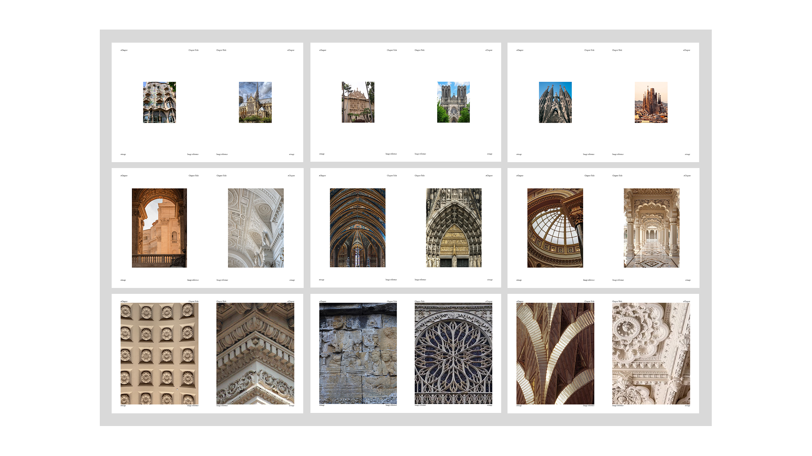
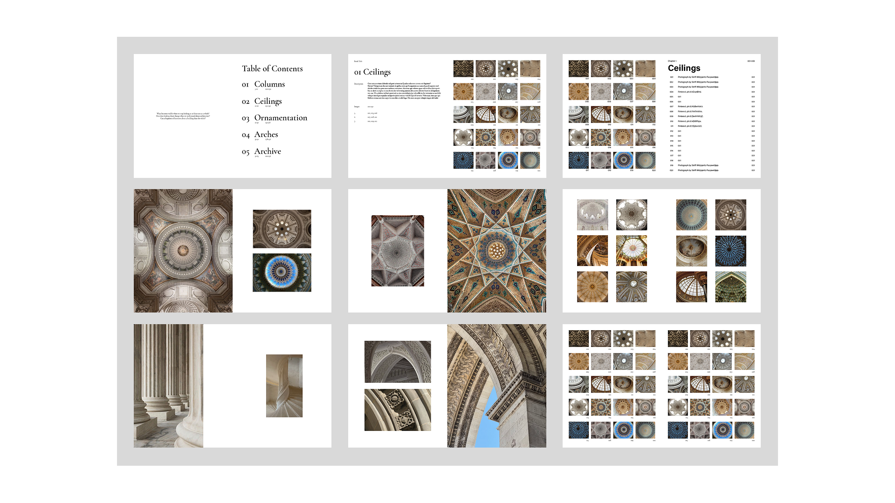
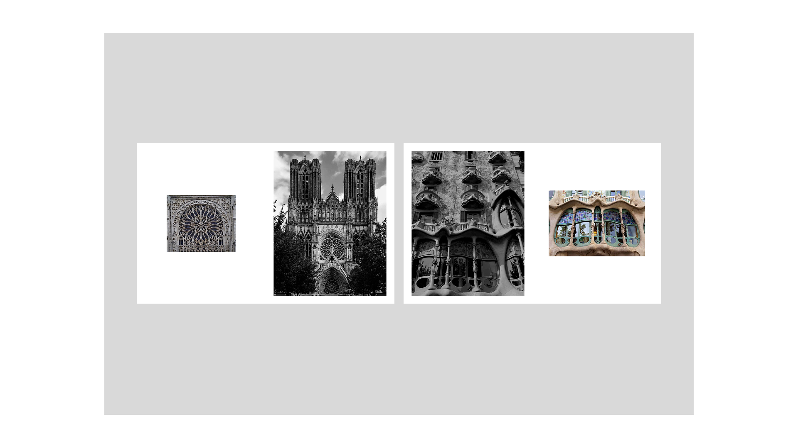
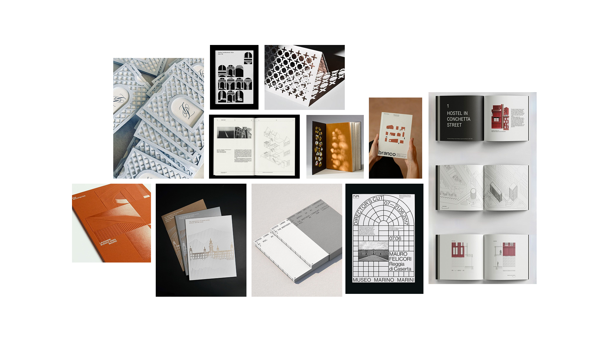

Week 03
256 Project Progress
Version 01

Version 02

Version 03

Inspiration

Notes
- Continue with Version 02: decorative serif the best typeface option, think about a title that includes ornamentations, motifs, and patterns, consider separating sections starting from facades of buildings to the interiors. ,
- Future steps: consider embossing or pattern making projects, consider incorporating architectural drawing/line style drawings.